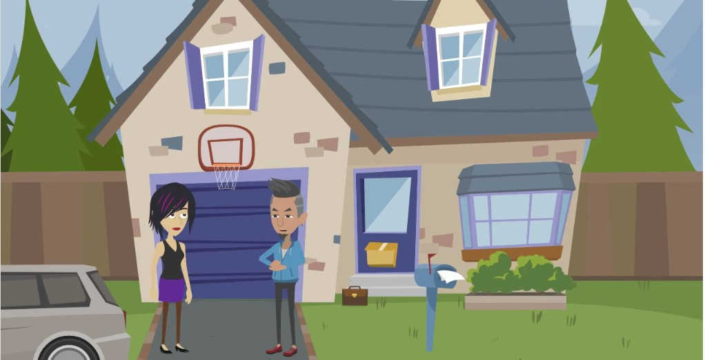
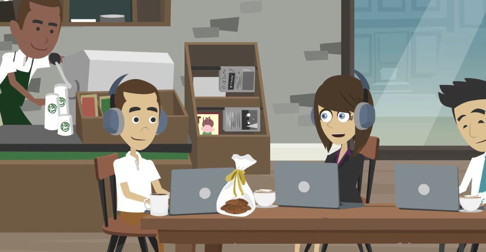
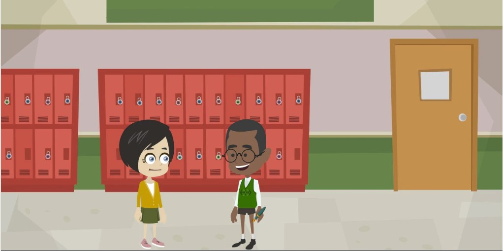
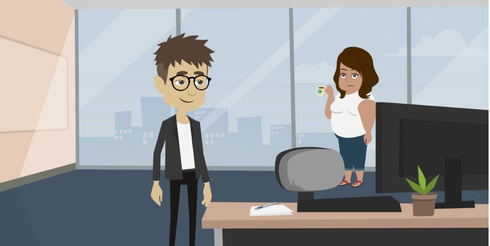

📐 Граматика

🎬 Відеопояснення до граматики:
🎬 Дивимось і слухаємо
4 розмови цього уроку
- 1Bike — can I borrow one?
- 2Cookie — would you like one?
- 3Pen — you can keep it
- 4Paper clips — found them!
📚 Слова уроку
🎧 Розмова 1 — Bike

🎧 Розмова 2 — Cookie

🎧 Розмова 3 — Pen

🎧 Розмова 4 — Paper Clips

🧩 Пазл — Вибери правильне слово
Обери слово зі списку, щоб заповнити пропуск у розмові.
📖 Читання — Перекладай усно
1 / 4
🃏 Флеш-картки
🗣️ Говоримо
1 / 4